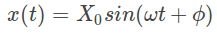
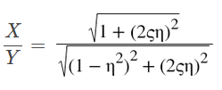
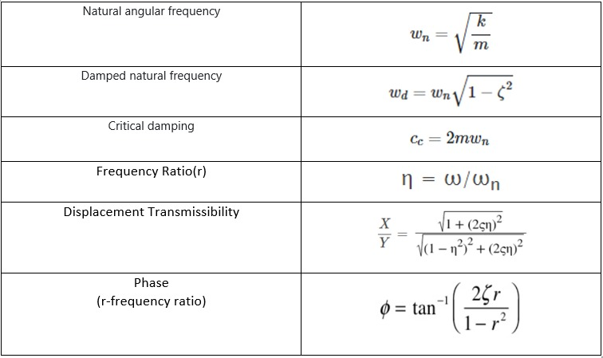

Project Name: SDOF Forced vibration:Base excitation
Project Members:Shreyas,Dhruvin,Prasanna,Sayak,Subham
When an applied force causes the system to vibrate it is considered as a case of forced vibration. An external excitation is often reduced to one of the following types:
In this website we have dealt with Case 2 ie Base Excitation
Solution of the System
The solution of the forced vibration system consists of a steady state part and a transient part. The steady state response is independent of the initial conditions. The transient part comes to zero with time and is usually neglected.
The steady state response is of the form:

where X0 is the amplitude and Φ is the phase of steady state vibration.
If base excitation is given by:
Then the steady state amplitude is given by:

Where,
The important formulae used are summarised in table below:

| Input Parameters for Solver | ||
|---|---|---|
| Parameter | Value | Unit |
| Mass [m] | ||
| Spring rate (Stiffness) [k] | ||
| Damping ratio (coefficient) [ζ] | Dimensionless | |
| Base Excitation frequency [Ω] | Hz | |
| Base Excitation Amplitude[Y0] | ||
| Results | ||
|---|---|---|
| Parameter | Value | Unit |
| Natural Frequency [ωn] | 0 | rad/s |
| Damped Frequency [ωd] | 0 | Hz |
| Damping Ratio[ζ] | 0 | Dimensionless |
| Critical Damping[Cc] | 0 | Dimensionless |
| Damping[C] | 0 | Ns/m |
| Amplitude Ratio | 0 | Dimensionless |
| Phase [Φ] | 0 | degrees |